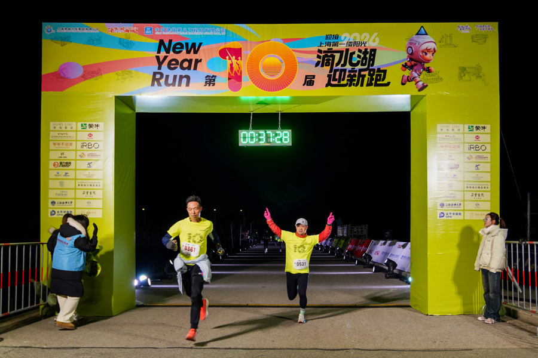
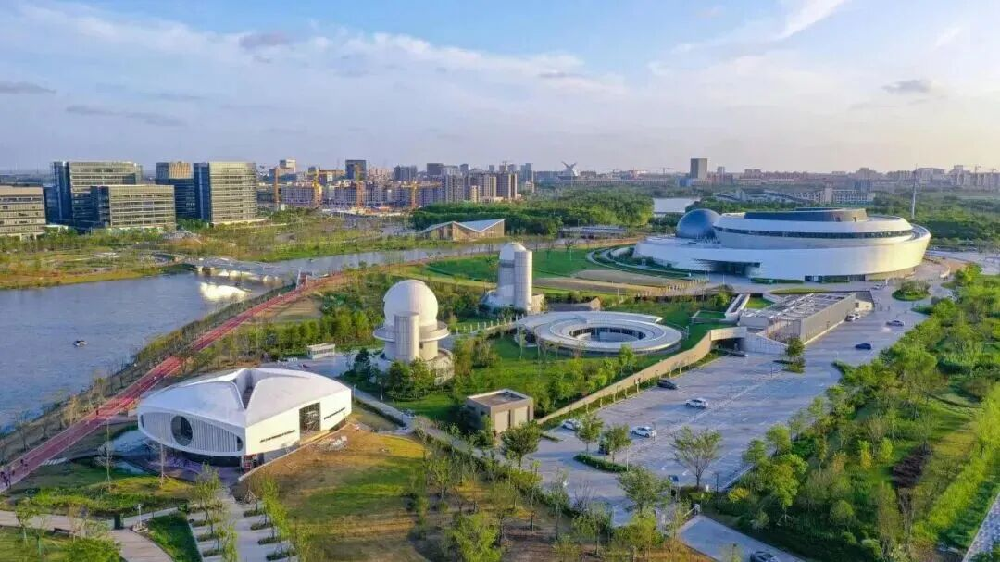
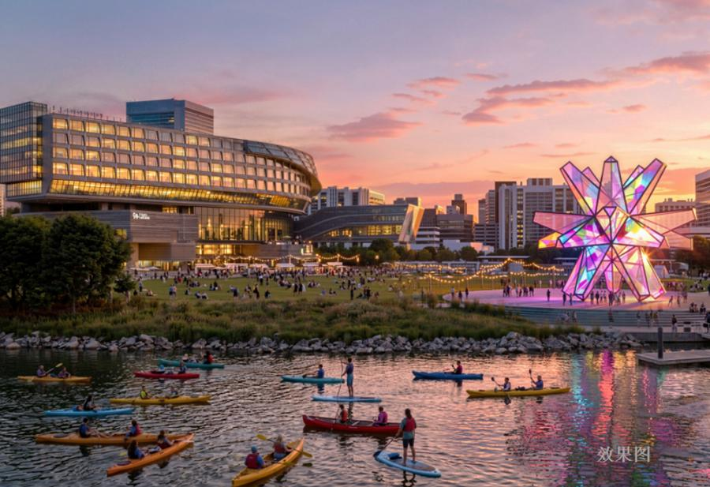
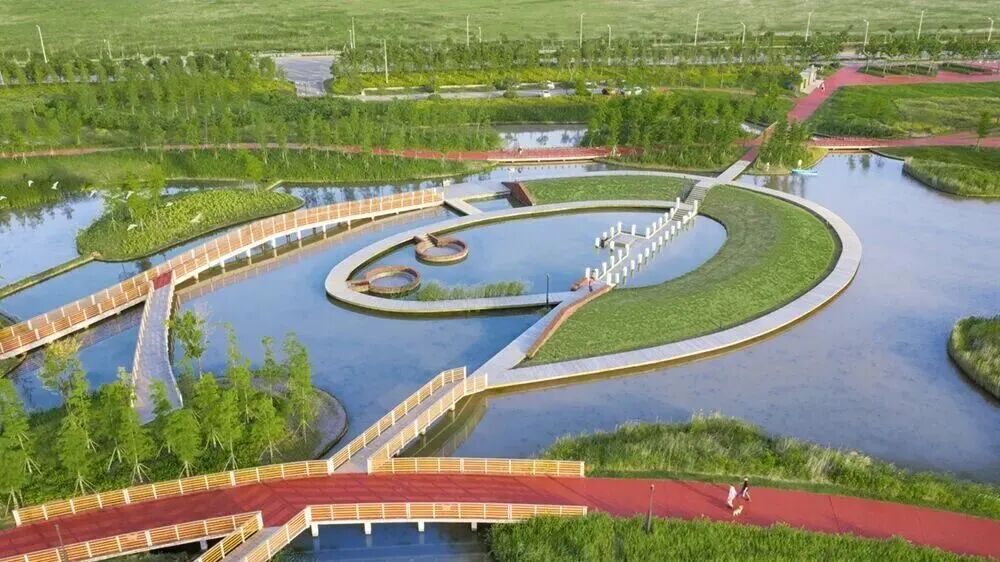

从图灵广场出发，绕湖八公里，赶到南汇嘴看日出。临港人的早晨，比市区早醒两个小时。
十一月的滴水湖，早上五点半，天还是黑的。
风从湖面上横着吹过来，带一点咸味。图灵广场上站满了人，羽绒服、头灯、号码布，白气一口一口往上冒。
发令枪一响，三千个人往湖里跑。
这是滴水湖迎新跑，上海所有新年赛事里开始得最早的一个。为的是赶上湖面上那第一缕光。

2026年1月1日，第十届滴水湖迎新跑。图源：文汇报
那天有个跑完的朋友发朋友圈，说五点半出门的时候还想骂自己，跑到南汇嘴看见太阳从海平面跳出来，又觉得值了。
临港的早晨，大概就是这个样子。人不多，但很早就动起来了。
1
一圈八公里，刚好够想清楚一件事
滴水湖是个圆。沿着湖有一圈绿道，走下来八公里上下，跑步的人叫它“小圈”。
迎新跑走的就是这条路：图灵广场出发，顺时针绕湖，终点在南汇嘴观海公园。八公里，配速六分钟，五十分钟不到就跑完了。
骑车的人玩得更大。
从滴水湖洲际酒店出发，把环湖一路、二路、三路串起来往外绕，全程四十公里，路线画在地图上像一个巨大的棒棒糖。今年已经是第三届，本地骑友管它叫“周末作业”。
沿途会经过朵云书院滴水湖店、一尺花园、壹号码头、春花秋色公园、星空之境、中国航海博物馆、上海天文馆。骑累了随时能停下来，看书、喝咖啡、逛展。

滴水湖畔的上海天文馆与环湖跑道。图源：乐游上海
跑步小圈：环湖绿道约 8 公里，全程平路
骑行大圈：约 40 公里，起点洲际酒店
迎新跑路线：图灵广场 → 南汇嘴观海公园
最佳时段：清晨 5:30—7:00，人少、风小、光好
我前几天早上六点四十到的湖边，跑道上已经有不少人。一个穿校服的中学生在拉伸，两个阿姨走得飞快，手里还拎着刚买的菜。
这种画面在上海市区不太容易看到。不是没人跑步，是很少有一圈路，能让跑的人、走的人、买菜的人互不打扰。
2
湖边正在长出新的东西
今年这条跑道的东北侧，多了一片围挡。
滴水湖运动中心（一期）在那里开工了。位置在环湖北三路、乔柏路一带，南边挨着春涟河。
总用地面积约 6.7 万平方米，差不多九个标准足球场那么大。今年 5 月底公示方案，9 月拿到规划许可，9 月底完成开工放样复验。
有人在公示期提意见，问能不能少建点足球场、多加点室内场馆。管委会的回复很实在：这块地是公共绿地，按要求建筑占地不能超过总用地的 2%，没有空间再加室内馆。
换句话说，湖边这片草地，会一直是草地。球场是“铺”在绿地上面的。
同一个方向再往西，星空之境海绵公园里，超级运动汇也在施工。
体量 12.4 万平方米，投资接近 26 亿，计划今年年底竣工、2027 年秋天开业。里面最出圈的是一个 24 米深、360 度全透明的室内深潜馆，全国第一家。

超级运动汇及星空之境海绵公园效果图。图源：上观新闻
项目负责人李锐在发布会上讲了个说法，叫“一体两翼”：综合体是主体，星空之境公园和滴水湖运动中心是两个翅膀，室内室外打通，做成全天候的运动空间。
潜水、攀岩、篮球、足球、网球、骑行、水上运动，都在规划里。还配了运动主题酒店、康复中心、轻食餐饮。
3
水变清了，芦苇也回来了
跑步的人最先察觉到的，其实不是工地，是水。
滴水湖今年进了上海美丽幸福河湖的示范名单。全市一百四十三条区管以上河湖里，评上示范的只有三十九条。
再往前一步，滴水湖幸福河湖建设工程也在推。南岛和环湖一路之间那片水域要治理，八万六千多平方米；北岛内部还有三万平方米。岸坡做生态化，不是简单砌石头。

星空之境海绵公园的清晨，芦苇已经泛白。图源：乐游上海
十一月的环湖二路，芦苇穗子一片白。风一过，整片沙沙响，比耳机里的白噪音好听。
更远一点，临港滨海那片海也在修。牡蛎礁、盐沼湿地、消浪坝一层层铺过去，今年入选了全国海洋生态保护修复典型案例。
一座填海填出来的城，花了十几年把水养回来。这事说起来不响，但每天早上在湖边跑的人，都能看见。
所以如果你问我，临港最值得体验的是什么。
不是哪个展馆，也不是哪个商场。
是早上六点的滴水湖。天刚亮，湖面是灰蓝色的，跑道上有人在喘气，早点摊刚支起来。
一座新城到底怎么样，看它早上六点的样子就够了。
你上一次在滴水湖看日出，是什么时候？
评论区聊聊。如果你有私藏的晨跑路线，也欢迎甩出来，我下次去试试。
参考资料：上观新闻、文汇报、临港新片区管委会官网、上海市水务局